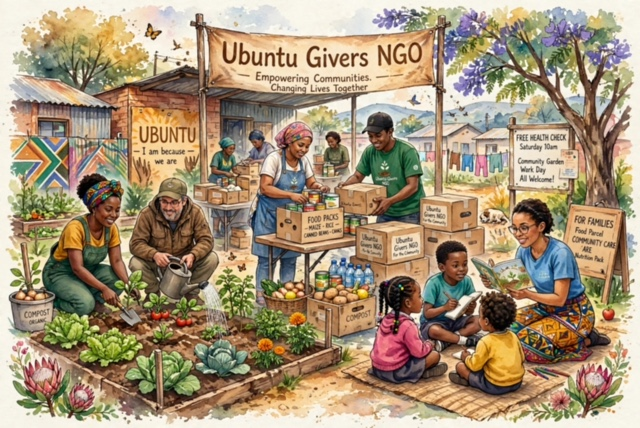

About Ubuntu Givers
Ubuntu Givers is a fictional South African non-profit organisation established in 2021 to support disadvantaged individuals and families within local communities.
The organisation was founded on the belief that communities become stronger when people work together to support one another.

Our Mission
Our mission is to empower vulnerable communities by providing educational opportunities, essential resources, mentorship, and programmes that promote dignity and long-term self-sufficiency.
Our Vision
Our vision is to create thriving communities where every individual has access to education, support, resources, and opportunities regardless of their background.
Our Core Values
- Compassion
- Community
- Education
- Integrity
- Hope
- Empowerment
Who We Support
Ubuntu Givers supports vulnerable families, young people, students, and community members who require educational, nutritional, and developmental assistance.
Frequently Asked Questions
Ubuntu Givers is a community-focused organisation dedicated to supporting individuals and families through education, food relief, digital skills and community development programmes.
You can express your interest in volunteering by visiting our Volunteer page and completing the enquiry form.
Our programmes include education support, food relief, digital skills training, youth mentorship and community development projects.
You can support our mission by enquiring about volunteering, sponsorship or community initiatives through our website.